Day One
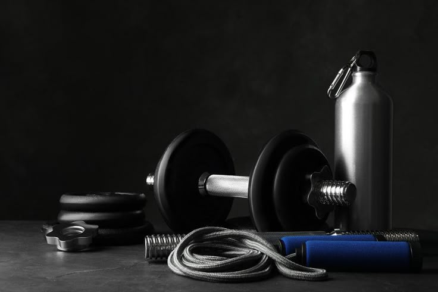
Chest & Back:
Start With Warming Up With Some Dynamic Streches.
We Will Do 3 Sets The First One Is Only FOR WARM UP Then Reach The Faliure In The remaining Sets.
NOTE: Reaching The failure must be between 8-12 reps.
Start Your Training Sets With light Weights (ONLY IN THE FIRST SET).
you can choose as you like between starting with chest or back.
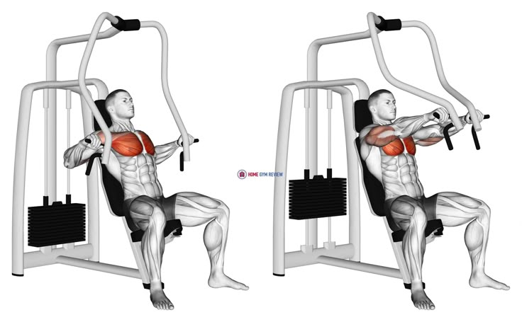
This is The Chest Press Machine Which We Will Start With.
This is Machine Targets the whole chest.
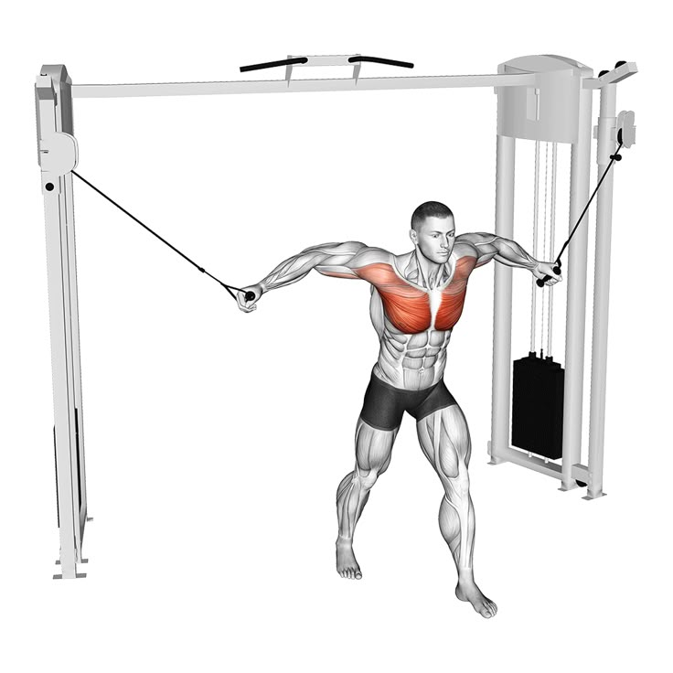
On The Narrow Cable Keep Pushing with your chest muscles And Reach The Faliure.
This Workout Targets The Lower Chest muscles
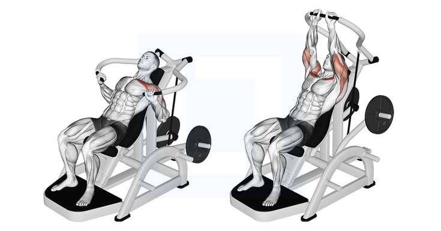
This Machine Targets The Incline Chest (YOU ALSO CAN REPLACE IT WITH DUMBLES).
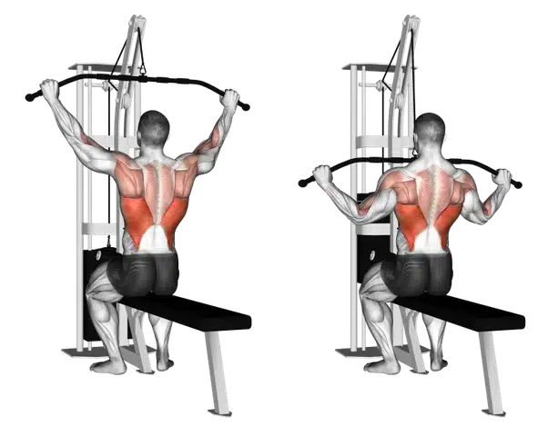
Lat Pulldown Targets the lats muscles (YOU CAN REPLACE IT WITH ROW Machine)
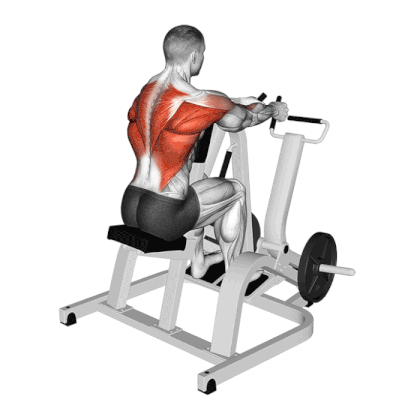
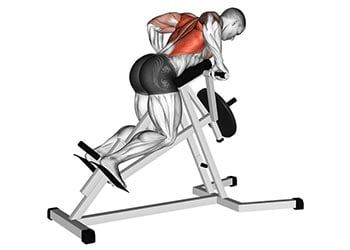
T-bar Row Targets the upper Back
NOTE: STRECH DOWN YOUR BACK AS MUCH AS YOU CAN
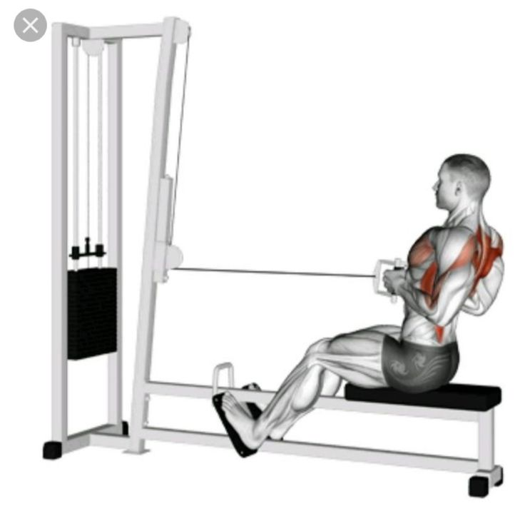
End it with Seated cable Row To Get the V-Shapped Back
My Notes
Day Two

shoulders & arm
Start With Warming Up With Some Dynamic Streches.
We Will Do 3 Sets The First One Is Only FOR WARM UP Then Reach The Faliure In The remaining Sets.
NOTE: Reaching The failure must be between 8-12 reps.
Start Your Training Sets With light Weights (ONLY IN THE FIRST SET).
you can choose as you like between starting with Shoulders or Arms.
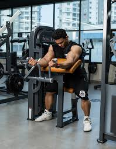
This is The Horse Machine Which We Will Start With.
This is Machine Targets the short head biceps.
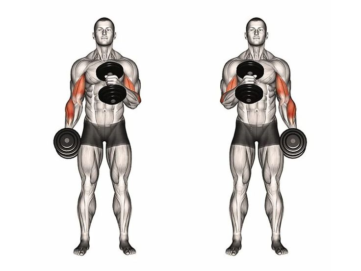
HAMMER CURLS
Try To keep your back on a wall to reach the Faliure.
This Workout Targets a part of your wrist muscles and brachioradialis muscle which is a part of triceps.
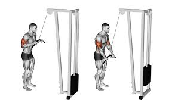
triceps pushdowns (YOU CAN REPLACE IT WITH THE TRICEPS Machine).
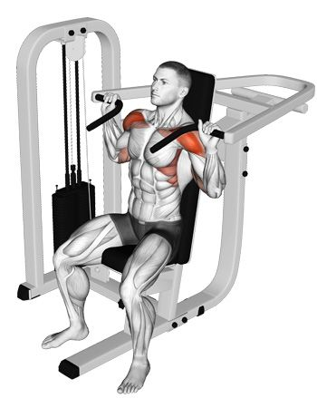
Sholder machine can target both of the front delts and the side delts.
NOTE: YOU DON'T HAVE TO DO ANY OTHER WORKOUTS FOR YOUR SHOULDERS.
My Notes
Day Three

Start With Warming Up With Some Dynamic Streches.
We Will Do 3 Sets The First One Is Only FOR WARM UP Then Reach The Faliure In The remaining Sets.
NOTE: Reaching The failure must be between 8-12 reps.
Start Your Training Sets With light Weights (ONLY IN THE FIRST SET).
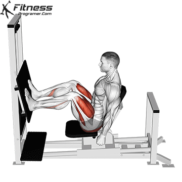
This is The Leg Press Machine Which We Will Start With.
This is Machine Can Target Your whole Leg muscles (IT DEPENDS ON YOUR FEET POSITION).
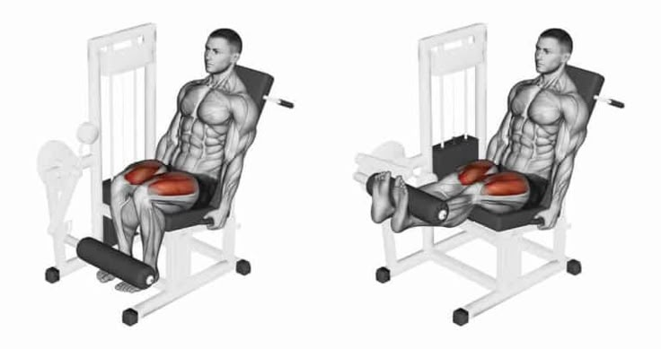
Leg Extension Targets the Front muscles Of Your Legs.
While Doing This Workout Try To keep Your legs Up for seconds Before Going Down With The Weights.

This Workout Targets Your Calves.
Try To Stay Up For A Second.
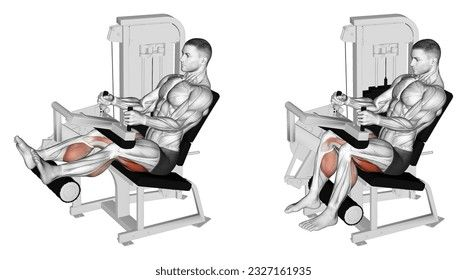
Leg Curls Targets The Hamstrings.
Squeeze Your muscles as much as you can.
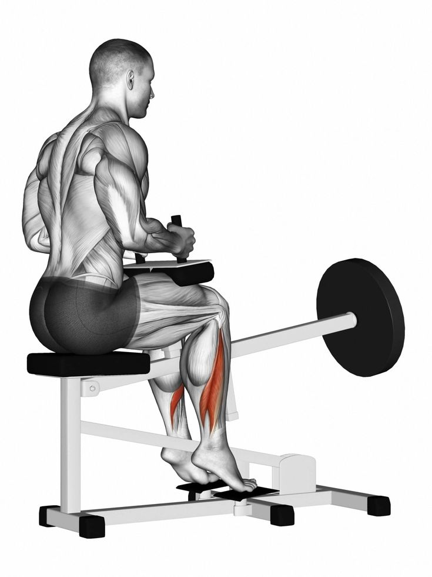
This Machine Targets The Lateral Part Of Your Calves.
My Notes
Diet

Blockquote
To Get A Great Body You Have to keep the Triangel rule which says any Triangel has three sides your three sides are TRAINING, EATING AND SLEEPING if you balanced this equation we promise you with your dream body.
instructions:
- TRAINING MUST BE INTENSE.
- ONLY EAT 2,250 CALORIE/DAY.
- SLEEP AT LEAST 7 HOURS.
- YOU HAVE TO EAT AT LEAST 100 GRAMS OF PROTEINS.
you can find protein in:
- Eggs.
- Fish.
- Meat.
- chicken breast.
- Some Types of Grains like Beans.
Stay away of:
- Fried food.
- Fnhealthy food.
- Junk food.
- A lot of carbohydrates.